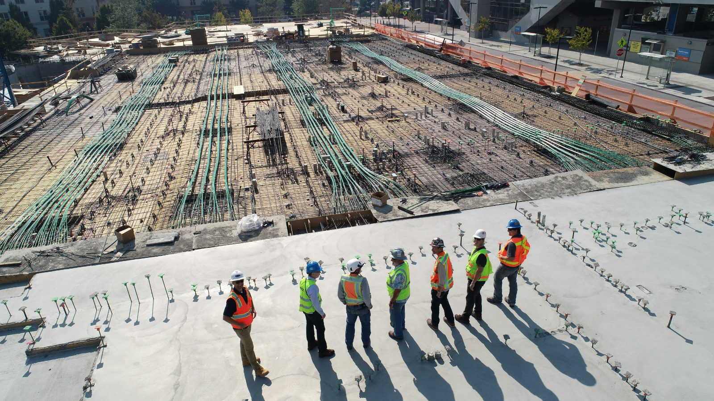

Zwei Partner, ein Maßstab für Evidenz
FELcilitate wird von seinen beiden Partnern geführt. Jedes Mandat wird von den Personen bearbeitet, die Sie im ersten Gespräch kennenlernen.

Managing Director
Dirk Bodenheim
Diplom-Ingenieur · MBA · PMP® (PMI) · über 35 Jahre in internationalen EPC-Projekten
Studium des Maschinenbaus, anschließend MBA, berufsbegleitend Qualifikation zum Project Management Professional (PMP) des Project Management Institute. Berufseinstieg 1990 bei Siemens KWU (heute Siemens Energy) in der Inbetriebnahme konventioneller Kraftwerke. Nach mehreren internationalen Bau- und Inbetriebnahmeeinsätzen wechselte er 1994 nach Singapur zu De Nora als Head of Engineering, später Technical Director.
1998 trat er als Projektleiter für Elektrolyseanlagen in die thyssenkrupp Uhde ein – Chlor-Alkali-Technologie, später weiterentwickelt für Wasserelektrolyse und grünen Wasserstoff. Nach einer internen Umstrukturierung wechselte er in das zentrale Projektmanagement und verantwortete dort zahlreiche EPC-Lump-Sum-Turnkey-Megaprojekte in den Bereichen Vergasung, Ammoniak und weiteren Technologien. Von 2021 bis 2024 leitete er den Bereich Projektmanagement und führte die interne Initiative, die die Modularization grüner Ammoniakanlagen definierte.
Schwerpunkte
- Project Director für EPC-Lump-Sum-Turnkey-Megaprojekte
- Bereichsleiter Projektmanagement; Global Process Owner
- Projektaudits und Assessments
- Teambuilding und Kick-off-Workshops
- Training, Mentoring und Shadowing von Projektleitern und Teams
- Projektanlauf – „die ersten 100 Tage“ – und Projektabschluss
- Vertragsanalyse, Risikomanagement, Termin- und Leistungssteuerung (KPIs), Project Controls
- Baustellen- und Inbetriebnahmeplanung, Completion Management
- Modularization und Advanced Work Packaging (AWP)

Partner
Dustin Mayor
Diplom-Ingenieur · MBA (WHU) · CEP® (AACE®) · ACCE-zertifiziert · über 15 Jahre in internationalen EPC-Projekten
Studium des Maschinenbaus und MBA an der WHU – Otto Beisheim School of Management mit internationalen Modulen an der Columbia Business School, der Fudan University und dem Indian Institute of Management. Er ist Certified Estimating Professional (CEP®) nach AACE® und zertifizierter Anwender des Aspen Capital Cost Estimator (ACCE).
Seine Laufbahn begann 2008 bei Alstom Power Systems in einem dualen Studiengang mit Einsätzen in Deutschland, China und Italien. 2011 wechselte er zu thyssenkrupp und war dort 14 Jahre im industriellen Anlagenbau tätig: Equipment Engineering und Bauüberwachung für Ammoniakanlagen im Nahen Osten und in Nordafrika, anschließend Konzernstrategie und PMO-Funktionen – mehrere Jahre als Projektleiter von thyssenkrupp für interne Strategie-, Transformations-, Organisations- und Restrukturierungsprogramme mit McKinsey, PwC, Bain und anderen, einschließlich des Board Office mit direkter Berichtslinie an den CEO. 2022 ging er nach Thailand, um das Modularization-Geschäft zu stärken, und leitete danach die globale Bid-Estimation-Initiative „Workflow and Tools“ bei thyssenkrupp Uhde.
Als Partner von FELcilitate berät er Bauherren, Auftragnehmer und Investoren in CAPEX-Projekten – Cost Engineering, Cold Eye Reviews, Terminplananalysen und Reifegradbewertungen im PDRI-Stil, zunehmend KI-gestützt.
Schwerpunkte
- Cost Engineering, Bid Estimation (ACCE), Benchmarking und Value Engineering
- Modularization von Anlagen und Logistikkonzepte
- Projektleitung interner Strategie-, Transformations- und Restrukturierungsprogramme mit führenden Beratungen (McKinsey, PwC, Bain)
- Board Office mit direkter Berichtslinie an den CEO
- Bauüberwachung für Neubau- und Servicebaustellen bis zur Inbetriebnahme
- Prozessanalyse und Automatisierung durch KI